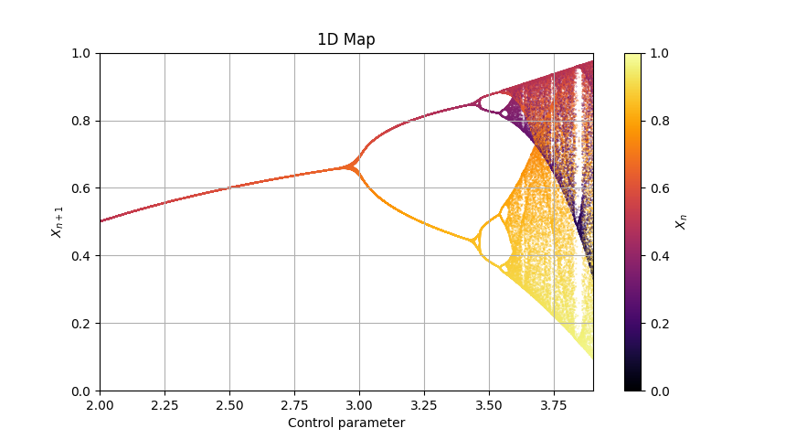

Map1D
class phaseportrait.Map1D(dF, x_range, y_range, n_points, *, composition_grade=1, dF_args={}, Title='1D Map', xlabel=r'Control parameter', ylabel=r'$X_{n+1}$', **kargs)
Class dedicated to 1 dimensional maps x(t+1) = f(x).
Parameters
-
dF : callable
A dF type function.
-
Range : [x_range, y_range]
Ranges of the axis in the main plot.
-
n_points : int
Maximum number of points
Key Arguments
-
dF_args : dict
If necesary, must contain the kargs for the
dFfunction. -
composition_grade : int
Number of times
dFis applied between positions saved. -
Title : str
Title of the plot.
-
xlabel : str
x label of the plot.
-
ylabel : str
y label of the plot.
-
color : str
Matplotlib
Cmap. -
size : float
Size of the scattered points.
-
thermalization : int
Thermalization steps before points saved.
Methods
Map1D.plot_over_variable
Map1D.plot_over_variable(param_name, valinterval, valstep, *, initial_x=None, limit_cycle_check_first=50, delta_cycle_check=0.0001)
Creates every map instance.
Parameters
-
param_name : str
Name of the variable. Must be in the
dFkargs. -
valinterval : list
Min and max value for the param range.
-
valstep : float
Separation between consecutive values in the param range.
Key Arguments
-
initial_x : float
Initial x position of every data series.
-
limit_cycle_check_first : int
Number of points saved before checking for repeated elemets.
-
delta_cycle_check : float
Diference between two positions to be considerated identical.
Returns
- None
Map1D.update_dF_args
Map1D.update_dF_args()
Updates the internal dF_args attributes to match the sliders.
Map1D.plot
Map1D.plot(*, color=None)
Prepares the plots and computes the values.
Key Arguments
-
color : str
Matplotlib
Cmap.
Returns
- tuple(matplotlib Figure, matplotlib Axis)
Map1D.add_slider
Map1D.add_slider(param_name, *, valinit=None, valstep=0.1, valinterval=10)
Adds a Slider for the dF function.
Parameters
-
param_name : str
Name of the variable. Must be in the
dFkargs of theMap1D.dFfunction.
Key Arguments
-
valinit : float, defautl=None
Initial position of the Slider
-
valinterval : Union[float,list], default=10
Min and max value for the param range.
-
valstep : float, default=0.1
Separation between consecutive values in the param range.
Map1D.plot_trajectory
Map1D.plot_trajectory(n_points, *, dF_args=None, initial_x=None, color='b', save_freq=1, thermalization=0)
Creates a map instance and computes it's positions.
Parameters
-
n_points : int
Number of points to be calculated.
Key Arguments
-
dF_args : dict
If necesary, must contain the kargs for the
dFfunction. By default takes the dF_args of theMap1Dinstance. -
initial_x : float
Initial position of the trajectory.
-
color : str
String matplotlib color identifier.
-
save_freq : int
Number of times
dFis aplied before a position is saved. -
thermalization : int
Thermalization steps before points saved.
Returns
- tuple:
(matplotlib.pyplot.figure, matplotlib.pyplot.Axis)
Examples
def Logistic(x, *, r=1.5):
return r*x*(1-x)
# Create an instance of Map1D
Logistic_Map = Map1D(Logistic, [2,3.9], [0,1], 5000, thermalization=50, size=0.05)
# We want to plot for r in the range 0 < r < 4, every 0.0005
Logistic_Map.plot_over_variable('r', [0,4], 0.0005)
# Plot
fig, ax = Logistic_Map.plot()
